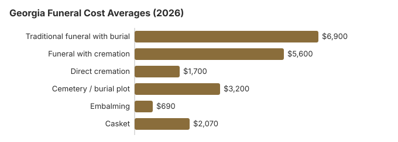

Funeral Costs in Georgia: What Families Pay in 2026
Depending on the choices, a Georgia funeral can cost anywhere from about $1,700 for direct cremation to $8,970 for a traditional funeral and burial in the costliest cases. Georgia homes set their own prices, so the bill depends heavily on which ones you call.
Georgia Funeral Costs, Item by Item
Georgia's Board of Funeral Service licenses homes but leaves pricing to them.
| Service | Average Cost | Range |
|---|---|---|
| Traditional funeral with burial | $6,900 | $5,175 – $8,970 |
| Funeral with cremation | $5,600 | $4,480 – $7,280 |
| Direct cremation | $1,700 | $1,190 – $2,380 |
| Cemetery / burial plot | $3,200 | $1,600 – $6,400 |
| Embalming | $690 | $500 – $1,500 |
| Casket | $2,070 | $690 – $5,520 |
Source of the figures: our state-by-state cost model, not calls to Georgia funeral homes; use them for planning, not as a quote or professional advice. See the model and our disclaimer.
State sources: Georgia State Board of Funeral Service; O.C.G.A. § 36-12-5.

Georgia Consumer Protections
If you believe a funeral home in Georgia has violated these rights, you can file a complaint with the FTC at ftc.gov or contact the Funeral Consumers Alliance for guidance. Complaints about a Georgia funeral home are filed in writing through the Secretary of State's online GOALS system, with the licensee's name and license number if you have them; Georgia law keeps complaints confidential (O.C.G.A. § 43-1-19).
Funeral Assistance in Georgia
- County payment under § 36-12-5 is limited to the actual cost and requires that the person, family and close relatives all be indigent.
- An eligible spouse or child claims Social Security's one-time $255 at 1-800-772-1213, within two years of the death.
- Whoever paid for a Georgia veteran's funeral can claim on Form 21P-530EZ; for deaths from October 1, 2026 not caused by service, VA pays up to $1,032 for burial and up to $1,032 for a plot. Our veteran burial benefits guide covers eligibility.
- Our payment help guide covers Medicaid and charities, and this guide covers a funeral without savings.
Educational Resources
- Payment Assistance GuideGovernment programs and financial help for funeral costs
- Best Burial Insurance CompaniesSide-by-side comparison of top burial insurance providers
- FTC Funeral RuleThe federal rule protecting funeral consumers
- Insurance Plan ComparisonCompare coverage, premiums, and payout speed across providers
- Funeral Consumers AllianceIndependent nonprofit consumer advocacy for funeral rights
- Funeral Insurance GuideCompare final expense and burial insurance options
Compare Funeral Costs
- Cremation vs. Burial Cost ComparisonSide-by-side price comparison to help you decide
- Average Funeral Cost in 2026National cost breakdown with real prices
- Direct Cremation: Most Affordable OptionNFDA 2023 median $2,645 with a family-supplied container (latest available)
- How to Compare Funeral PricesStep-by-step guide to getting the best price
- Funeral Cost BreakdownEvery line item explained: know what you're paying for
- Cheapest Funeral OptionsLower-cost alternatives, with typical price ranges
Georgia Cremation and Burial Pages
More detail on each:
Cremation Costs in Georgia
Georgia cremation from about $1,700 direct to $5,600 with a service, with urn and scattering information.
Burial Costs in Georgia
Every Georgia burial cost, from a plot near $3,200 to casket, vault, headstone and opening: $15,550 to $20,050 in total.
Georgia Fees to Watch
Surprises on a Georgia bill usually come from the same few add-ons.
- Embalming described as required. Georgia law does not require it for cremation or immediate burial.
Georgia Cremation Compared With Burial
Cremation
- Direct, about $1,700
- About $5,600 with a funeral
- No cemetery plot, opening fee or vault
- A homegoing or memorial can be held at church weeks later
- Chosen in 45% of Georgia deaths
Traditional Burial
- About $6,900 for the funeral
- A plot adds about $3,200
- Most Georgia cemeteries want a vault or grave liner
- A grave the family can visit
- Metal casket, around $2,500 at the US median (NFDA 2023 General Price List Study); Georgia retailers differ
Lower-Cost Georgia Funerals
| What | Cost (est.) | Description |
|---|---|---|
| Direct cremation | $1,700 | Cremation without a service, after a permit; no waiting period applies (O.C.G.A. § 31-10-20; Ga. Comp. R. & Regs. r. 511-1-3-.23). |
| Direct burial | $3,450 | Burial without embalming or visitation; grave and opening are extra. |
| Green burial | $3,795 | Unembalmed, in a shroud or simple casket, where a Georgia cemetery allows it. |
| Cremation + memorial | $5,600 | Cremation, followed by a church or chapel memorial |
| Traditional funeral | $6,900 | Embalming, visitation, the funeral and a graveside service |
Church, Homegoing and Cost in Georgia
Many Georgia families hold a homegoing service at church followed by a repast, and congregations often waive or lower venue costs for members. When you get a quote, ask whether it assumes a service in the funeral home's chapel; moving it to church often cuts the facility charge by $500-$1,500.
What Shapes Georgia Prices
Local living costs and the number of competing homes count most. Southern prices generally sit under the $8,300 US median, but metro Atlanta homes can charge 10-30% more than rural Georgia ones.
Georgia's cremation rate, 45%, is 18.4 points under NFDA's 63.4% national projection for 2025.
Georgia Funeral Costs by City
Our estimates for Georgia's main metros:
Starting a Georgia Funeral Plan
- Choose between burial and cremation: cremation in Georgia or burial in Georgia.
Ordering a Georgia death certificate
Georgia's State Office of Vital Records charges a $25 search fee for a death certificate; when the record turns up, the fee covers the first certified copy. Each additional copy bought at the same time is $5, and the search fee is not refunded if nothing is found (Georgia DPH vital records fees; checked October 29, 2026). The state holds Georgia death records from 1919 on.
- Online: through the state's ROVER system, $25 per copy plus an $8 processing fee. Expedited shipping is $16 but does not shorten processing, which can take up to 10 weeks; georgia.gov quotes 2 to 4 weeks for many online orders.
- By mail: send the application with payment and a copy of photo ID to the State Office of Vital Records, 1680 Phoenix Boulevard, Suite 100, Atlanta, GA 30349, and allow 8 to 10 weeks.
- Filing: the funeral director files the certificate, which Georgia requires within 72 hours of death (O.C.G.A. § 31-10-15), and can usually order your first copies at the same time.
- County offices: county vital records offices also issue death certificates, often faster than the state.
Count copies by the accounts to be closed: each life insurer, bank, brokerage, pension and vehicle title office may want its own certified copy, while others accept a photocopy. With extra copies at only $5 each when ordered together, five copies from the state cost $45, so it usually pays to order a few more than you expect to need.
Georgia's funeral board, county help and veterans burial
Funeral homes in Georgia are licensed by the Georgia State Board of Funeral Service, which takes license questions and complaints at 404-424-9966.
The Funeral Consumers Alliance leaves Georgia off its list of nine restrictive states: a family may care for its own dead, although someone must still file the death certificate and get the disposition permit. Cremation needs a permit, but no waiting period is set (O.C.G.A. § 31-10-20; Ga. Comp. R. & Regs. r. 511-1-3-.23).
County burial for indigent families
Under O.C.G.A. § 36-12-5, the county where the person died must provide or pay for a decent burial, cremation or other disposition when the person, the family and close relatives are all indigent. The county decides the amount, never more than the actual cost, and some counties, Fulton among them, screen requests through DFCS (O.C.G.A. § 36-12-5). The $255 from Social Security is a separate benefit claimed by a surviving spouse or child, never by the funeral home.
What the funeral home must hand you
Under the federal Funeral Rule, a Georgia home must let you see its casket and vault price lists before you look at the merchandise, and after the arrangement conference it owes you a written, itemized statement of everything you picked and its total. For direct cremation it must offer a simple alternative container, such as cardboard or unfinished wood, instead of a casket. Keep that statement, because it is what you compare against the final bill.
Prepaid funeral contracts
Preneed funeral and cemetery contracts in Georgia fall under the Georgia Cemetery and Funeral Services Act of 2000 (O.C.G.A. Title 10, Chapter 14), administered by the Secretary of State. Before buying a prepaid plan, ask the seller whether the money goes into trust or an insurance policy, what happens if you move out of state, and whether the price is guaranteed.
Veterans
Georgia National Cemetery in Canton (770-479-9300) is reserved through the VA's National Cemetery Scheduling Office, 800-535-1117. The two state veterans cemeteries, at Glennville (912-654-5398) and Milledgeville (478-445-3363), handle requests themselves.
Georgia checklist
- Get a General Price List from every home you visit; one must be handed over on request.
- Decide about embalming and a viewing first, since those are often the biggest optional costs.
- When the family is indigent, contact the county, often through DFCS, before any payment.
- For a veteran, check Georgia National Cemetery first.
- Call 404-424-9966 if a home won't stand by its price list.
Frequently Asked Questions
What does a Georgia funeral cost?
Plan on roughly $6,900 if the service includes embalming, a viewing and burial; that is our 2026 Georgia estimate and 17% under the $8,300 national median. Families who cremate after a service usually spend near $5,600, the simplest cremation begins around $1,700, and the grave itself brings about $3,200 on top.
Does cremation cost less in Georgia?
By a wide margin. A $1,700 direct cremation undercuts a $6,900 traditional funeral by $5,200, and by roughly $8,400 when the $3,200 or so for a Georgia plot and opening is counted.
What are a Georgia family's rights?
The federal Funeral Rule (16 CFR 453) entitles you to an itemized General Price List, to prices over the phone, and to supply your own casket or urn with no handling fee. The Funeral Consumers Alliance lists Georgia among the states where a family need not hire a funeral director. Complaints go to the State Board of Funeral Service at 404-424-9966.
How can a Georgia family save?
Ask three Georgia homes for their General Price Lists, choose items one by one instead of a package, use your church for the service if it allows, and if price decides it, direct cremation at about $1,700 is the floor.
Is embalming required in Georgia?
No. The state's guide to funeral homes says Georgia law does not require embalming for cremation or immediate burial; it may be required for certain infectious diseases, and a funeral home may want it for a viewing, in which case you can ask whether refrigeration will do instead.
If there is a dispute among family members about disposition, the funeral home may embalm or refrigerate the body while it waits for a decision, and those costs can be added to the bill. This page puts Georgia embalming at about $690, a little under NFDA's 2023 national median of $845, so a hold during a family dispute that ends in embalming can add roughly that much to the bill.
How do Georgia prices compare with the US?
Georgia comes in below the national median on our estimate: about $6,900 for a traditional funeral against NFDA's 2023 figure of $8,300 with viewing and burial, and $6,280 with cremation. Atlanta prices run higher than rural Georgia, so local price lists tell you more than any statewide average.
What's the cheapest funeral in Georgia?
Direct cremation, from roughly $1,700. Direct burial is the next step up at about $3,450, which is $3,450 below a traditional Georgia funeral.
Where do I find lower-cost Georgia funeral homes?
Call them. Georgia homes have to quote prices by phone under the federal Funeral Rule, and none may charge extra because the casket or urn came from another seller. Atlanta homes tend to charge more than rural ones, so include one outside the metro.